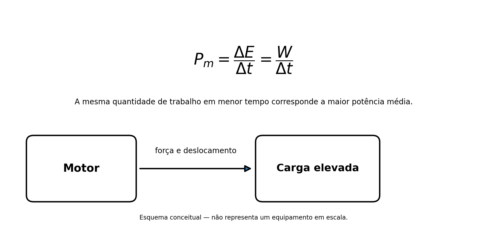
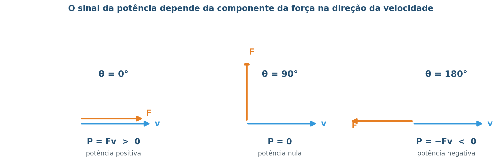
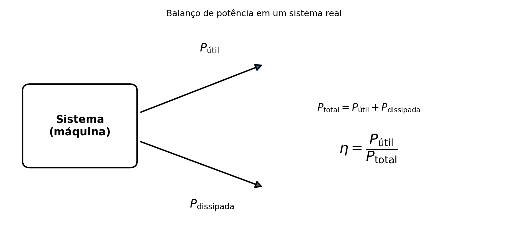

Potência mecânica mede a rapidez com que um trabalho é realizado ou uma energia é transferida. Para um intervalo de tempo, $P_m=\dfrac{W}{\Delta t}=\dfrac{\Delta E}{\Delta t}$. No Sistema Internacional, sua unidade é o watt: $1\,\text{W}=1\,\text{J/s}$.
A potência instantânea de uma força é $P=\vec F\cdot\vec v=Fv\cos\theta$, em que $\theta$ é o ângulo entre força e velocidade. O rendimento compara a potência útil com a potência recebida: $\eta=\dfrac{P_{útil}}{P_{recebida}}$. Em máquinas reais, parte da energia é dissipada e $\eta<1$.
📖 Potência mecânica
1. O que a potência mede?
Imagine duas equipes elevando cargas idênticas até a mesma altura. Se ambas realizam o mesmo trabalho, mas uma termina a tarefa em menos tempo, ela desenvolve maior potência média. Portanto, potência não informa apenas quanto trabalho foi realizado: informa com que rapidez ocorreu a transferência de energia.
Considere um sistema que transfere uma quantidade de energia $\Delta E$ durante um intervalo $\Delta t$. Define-se potência média por:
$$P_m=\frac{\Delta E}{\Delta t}$$
Quando a transferência de energia ocorre por meio do trabalho de uma força, podemos escrever:
$$P_m=\frac{W}{\Delta t}$$
Nessas expressões, $\Delta E$ é a energia transferida (joule, J), $W$ é o trabalho (joule, J) e $\Delta t$ é o intervalo de tempo (segundo, s). A potência média é uma grandeza escalar. O sinal acompanha o trabalho considerado: potência positiva indica transferência de energia para o sistema; potência negativa indica que a força retira energia dele.

Figura 1: Representação esquemática da transferência de energia entre dois sistemas. A potência média corresponde à energia transferida por unidade de tempo.
2. Unidade de potência e conversões
No Sistema Internacional:
$$1\,\text{W}=1\,\frac{\text{J}}{\text{s}}$$
Assim, uma máquina de potência média igual a $500\,\text{W}$ transfere, em média, $500\,\text{J}$ de energia a cada segundo. Também são comuns:
Atenção: cv e hp são unidades diferentes, embora seus valores sejam próximos. Em exercícios, utilize a conversão fornecida quando houver uma convenção específica.
3. Como comparar máquinas?
Se duas máquinas realizam o mesmo trabalho, a que utiliza menor intervalo de tempo apresenta maior potência média. Por outro lado, para uma mesma potência constante, a energia transferida cresce proporcionalmente ao tempo:
$$\Delta E=P\,\Delta t$$
Por exemplo, um motor de $2{,}0\,\text{kW}$ funcionando durante $30\,\text{s}$ transfere:
Essa relação é válida quando a potência permanece constante no intervalo. Se ela variar, deve-se utilizar a potência média ou considerar a variação ao longo do tempo.
📖 Potência instantânea
4. Da potência média à potência instantânea
A potência média descreve um intervalo. Entretanto, em movimentos nos quais a força ou a velocidade varia, pode ser necessário conhecer a taxa de transferência de energia em um instante específico. A potência instantânea é definida pelo limite:
Para uma força constante durante um pequeno deslocamento $d\vec r$, o trabalho elementar é $dW=\vec F\cdot d\vec r$. Como $\vec v=d\vec r/dt$, obtemos:
Em que $F$ é o módulo da força (N), $v$ é o módulo da velocidade (m/s) e $\theta$ é o ângulo entre os vetores. O produto $Fv$ tem unidade $\text{N}\cdot\text{m/s}=\text{J/s}=\text{W}$.

Figura 2: A potência depende da projeção da força sobre a direção da velocidade. O ângulo entre os vetores determina o sinal e o valor da potência.
5. Interpretação do ângulo entre força e velocidade
$\theta=0^\circ$: força e velocidade têm o mesmo sentido. $P=Fv$, potência positiva; a força favorece o movimento.
$0^\circ<\theta<90^\circ$: a componente da força na direção do movimento é positiva; a potência é positiva.
$\theta=90^\circ$: a força é perpendicular à velocidade. $P=0$; naquele instante, ela não transfere energia por trabalho.
$90^\circ<\theta\leq180^\circ$: a componente da força na direção do movimento é contrária à velocidade; a potência é negativa.
$\theta=180^\circ$: força e velocidade têm sentidos opostos. $P=-Fv$.
Um exemplo importante ocorre no movimento circular: a força centrípeta é radial, enquanto a velocidade instantânea é tangente à trajetória. Como são perpendiculares, a potência instantânea da força centrípeta é nula. Ela altera a direção do vetor velocidade, mas não modifica seu módulo quando atua isoladamente em um movimento circular uniforme.
6. Quando a potência média coincide com a instantânea?
Se a potência permanece constante durante todo o intervalo analisado, seu valor médio é igual ao valor instantâneo em qualquer instante. Se a potência varia, a média corresponde à taxa constante equivalente que produziria a mesma transferência total de energia no mesmo intervalo.
📖 Rendimento
7. Potência recebida, útil e dissipada
Uma máquina real não converte toda a energia recebida na forma desejada. Em um motor, por exemplo, parte da energia pode ser dissipada pelo aquecimento dos componentes, pelo atrito e pela emissão de som. A energia não desaparece: transforma-se em outras formas, mas nem toda parcela atende à finalidade principal do equipamento.
Em um balanço energético, a potência recebida se distribui entre a potência útil e a potência dissipada:
$$P_{recebida}=P_{útil}+P_{dissipada}$$

Figura 3: Balanço de potência em uma máquina. A potência de entrada é distribuída entre a parcela aproveitada para a finalidade desejada e as perdas por dissipação.
8. Definição matemática do rendimento
O rendimento ($\eta$) é a razão entre a potência útil e a potência recebida:
$$\eta=\frac{P_{útil}}{P_{recebida}}$$
Também pode ser definido pela razão entre a energia útil e a energia total recebida, desde que ambas sejam consideradas no mesmo intervalo:
$$\eta=\frac{E_{útil}}{E_{recebida}}$$
O rendimento é adimensional, pois compara grandezas da mesma natureza e com a mesma unidade. Para expressá-lo em porcentagem:
Se uma máquina recebe $1000\,\text{W}$ e fornece $800\,\text{W}$ de potência útil, então $\eta=0{,}80=80\%$. Os $200\,\text{W}$ restantes correspondem à potência dissipada. Em uma máquina real, o rendimento é inferior a $100\%$, pois sempre há processos de dissipação.
9. Determinação de grandezas a partir do rendimento
Conhecendo o rendimento e a potência recebida, a potência útil pode ser calculada por $P_{útil}=\eta P_{recebida}$. Se forem conhecidas a potência útil e o rendimento, isolamos a potência recebida:
$$P_{recebida}=\frac{P_{útil}}{\eta}$$
Nessa última expressão, use o rendimento na forma decimal. Por exemplo, $75\%=0{,}75$, e não 75.
📖 Aplicação: potência na elevação de cargas
10. Elevadores e guindastes
Considere uma carga de massa $m$ elevada verticalmente com velocidade constante $v$. Como não há aceleração, a força de tração que o cabo exerce sobre a carga tem módulo igual ao peso: $F=mg$. Se a força e a velocidade têm o mesmo sentido, a potência mecânica útil entregue à carga é:
$$P_{útil}=Fv=mgv$$
Essa expressão considera a velocidade vertical constante e despreza variações de energia cinética. Se houver aceleração, a tração não será necessariamente igual ao peso; deve-se aplicar a segunda lei de Newton antes de calcular a potência.
Exemplo: um elevador transporta uma carga de $400\,\text{kg}$ para cima, com velocidade constante de $1{,}5\,\text{m/s}$. Adotando $g=10\,\text{m/s}^2$:
A diferença, $1500\,\text{W}$, corresponde à potência dissipada no funcionamento do sistema.
11. Cuidados conceituais e erros frequentes
Energia e trabalho são medidos em joules; potência é medida em watts.
Potência elevada não significa necessariamente trabalho total maior: o tempo também precisa ser considerado.
Na potência instantânea, utilize o ângulo entre força e velocidade, não necessariamente o ângulo entre força e deslocamento total.
Uma força perpendicular à velocidade pode alterar a direção do movimento mesmo tendo potência instantânea nula.
Rendimento de $80\%$ deve ser usado como $0{,}80$ nas operações algébricas.
Não confunda potência útil com potência recebida; a diferença corresponde à potência dissipada.
A relação $P=mgv$ exige elevação vertical com velocidade constante e condições explicitadas no modelo.
💡 Física em Ação
Elevadores e guindastes
Ao elevar uma carga, o motor transfere energia para aumentar sua energia potencial gravitacional. Para velocidade vertical constante, a potência útil é $P_{útil}=mgv$. A potência que o motor recebe deve ser maior quando há perdas no sistema.
Veículos e motores
A potência disponibilizada pelo motor está relacionada à taxa de realização de trabalho. Para uma força de tração paralela ao movimento, $P=Fv$. Aumentar a velocidade mantendo a mesma potência disponível reduz a força de tração que pode ser fornecida, em um modelo ideal.
Geração eólica
O vento transfere energia às pás de uma turbina, que movimentam um gerador. Parte da energia recebida é convertida em energia elétrica e parte é dissipada em processos mecânicos e elétricos; por isso, o rendimento global é inferior a 100%.
✅ 5 Questões Resolvidas (R 1 a 5)
R 1: Potência média a partir do trabalho
Enunciado: Uma força realiza um trabalho de $2400\text{ J}$ sobre um corpo durante $12\text{ s}$. Determine a potência média.
Modelo: $P_m=W/\Delta t$, válido para a potência média no intervalo.
Cálculo: $P_m=2400/12=200\text{ J/s}$.
Resposta: $\boxed{P_m=200\text{ W}}$. A força transfere energia à taxa média de 200 joules por segundo.
R 2: Comparação de máquinas
Enunciado: Duas máquinas realizam o mesmo trabalho de $18\text{ kJ}$. A máquina A leva $30\text{ s}$ e a máquina B leva $45\text{ s}$. Calcule as potências médias e indique qual é mais potente.
Resposta: A máquina A é mais potente, pois realiza o mesmo trabalho em menor tempo: $600\text{ W}$ contra $400\text{ W}$.
R 3: Potência instantânea e ângulo
Enunciado: Uma força de módulo $50\text{ N}$ atua sobre um corpo que se desloca instantaneamente com velocidade de $4\text{ m/s}$. O ângulo entre a força e a velocidade é $60^\circ$. Determine a potência instantânea da força.
Resposta: $\boxed{100\text{ W}}$. A componente da força paralela à velocidade é positiva.
R 4: Potência útil de um elevador
Enunciado: Um elevador transporta uma carga de massa $500\text{ kg}$ verticalmente para cima, com velocidade constante de $2{,}0\text{ m/s}$. Adote $g=10\text{ m/s}^2$. Determine a potência útil necessária para elevar a carga, desprezando perdas.
Como a velocidade é constante, a força de tração equilibra o peso: $F=mg=5000\text{ N}$.
Modelo: $P=Fv=mgv$.
$P=500\cdot10\cdot2=10\,000\text{ W}$.
Resposta: $\boxed{P_{\rm útil}=10\text{ kW}}$.
R 5: Rendimento de uma máquina
Enunciado: Uma máquina recebe potência de $2{,}5\text{ kW}$ e fornece potência útil de $2{,}0\text{ kW}$. Determine seu rendimento percentual e a potência dissipada.
Resposta: rendimento de $\boxed{80\%}$ e potência dissipada de $\boxed{500\text{ W}}$.
✍️ 10 Questões Propostas (P 6 a 15)
P 6: Potência média
Enunciado: Um guindaste realiza trabalho de 15 000 J em 25 s. Determine sua potência média.
Resolução: P=15000/25=600 W.
P 7: Unidade de potência
Enunciado: Uma máquina opera com potência constante de 750 W durante 8 s. Qual energia ela transfere nesse intervalo?
Resolução: E=PΔt=750·8=6000 J.
P 8: Conversão de unidade
Enunciado: Um motor tem potência de 3,2 kW. Expresse esse valor em watts.
Resolução: 3,2 kW=3,2×1000=3200 W.
P 9: Potência e velocidade
Enunciado: Um veículo é tracionado por uma força resultante de 1200 N, paralela à velocidade de 15 m/s. Determine a potência instantânea dessa força.
Resolução: P=Fv=1200·15=18 000 W=18 kW.
P 10: Ângulo entre força e velocidade
Enunciado: Uma força de 80 N atua sobre um corpo com velocidade de 5 m/s, formando 120° com a velocidade. Calcule a potência instantânea.
Resolução: P=80·5·cos120°=400·(-0,5)=-200 W.
P 11: Força perpendicular
Enunciado: Um corpo move-se com velocidade constante em módulo numa trajetória circular. A força centrípeta tem módulo 30 N e a velocidade 4 m/s. Qual é a potência instantânea da força centrípeta? Justifique.
Resolução: P=Fv cos90°=0 W.
P 12: Potência de elevação
Enunciado: Uma carga de 200 kg é elevada verticalmente com velocidade constante de 1,5 m/s. Adote g=10 m/s² e despreze perdas. Determine a potência útil.
Resolução: P=mgv=200·10·1,5=3000 W=3,0 kW.
P 13: Rendimento
Enunciado: Um equipamento recebe 900 W e fornece 720 W de potência útil. Determine o rendimento percentual.
Resolução: η=(720/900)·100%=80%.
P 14: Potência dissipada
Enunciado: Um motor recebe 5,0 kW e possui rendimento de 70%. Determine a potência útil e a potência dissipada.
Enunciado: Uma máquina de potência constante igual a 2,0 kW realiza um trabalho de 48 kJ. Quanto tempo ela leva?
Resolução: Δt=W/P=48000/2000=24 s.
🎓 5 Questões de Teste (T 16 a 20)
T 16 (ExataSite): Definição de potência
Enunciado: A grandeza física que expressa a rapidez com que um trabalho é realizado é:
A) energia potencial.
B) potência.
C) força.
D) impulso.
E) rendimento.
Gabarito: B. Resolução: Potência média é trabalho dividido pelo intervalo de tempo.
T 17 (ExataSite): Potência média
Enunciado: Uma força realiza 3600 J de trabalho em 12 s. A potência média é:
A) 30 W.
B) 120 W.
C) 300 W.
D) 432 W.
E) 3600 W.
Gabarito: C. Resolução: P=3600/12=300 W.
T 18 (ExataSite): Potência instantânea
Enunciado: Uma força de 100 N atua na mesma direção e sentido da velocidade de 6 m/s. A potência instantânea é:
A) 16,7 W.
B) 100 W.
C) 600 W.
D) 1000 W.
E) 6000 W.
Gabarito: C. Resolução: P=Fv=100·6=600 W.
T 19 (ExataSite): Rendimento
Enunciado: Uma máquina recebe 1,2 kW e fornece 900 W de potência útil. Seu rendimento é:
A) 25%.
B) 50%.
C) 60%.
D) 75%.
E) 90%.
Gabarito: D. Resolução: η=900/1200=0,75=75%.
T 20 (ExataSite): Máquina de elevação
Enunciado: Um motor eleva uma carga de 400 kg com velocidade constante de 0,50 m/s. Adote g=10 m/s² e rendimento de 80%. A potência total recebida pelo motor é:
A) 1,0 kW.
B) 2,0 kW.
C) 2,5 kW.
D) 4,0 kW.
E) 5,0 kW.
Gabarito: C. Resolução: Pútil=mgv=400·10·0,50=2000 W. Como η=Pútil/Ptotal, Ptotal=2000/0,80=2500 W=2,5 kW.